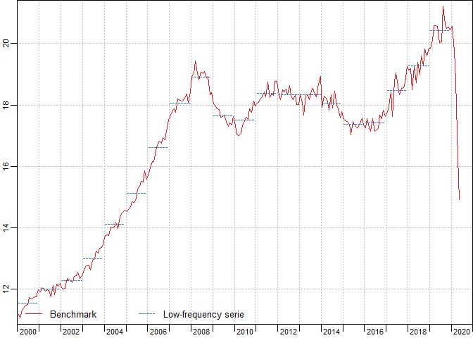
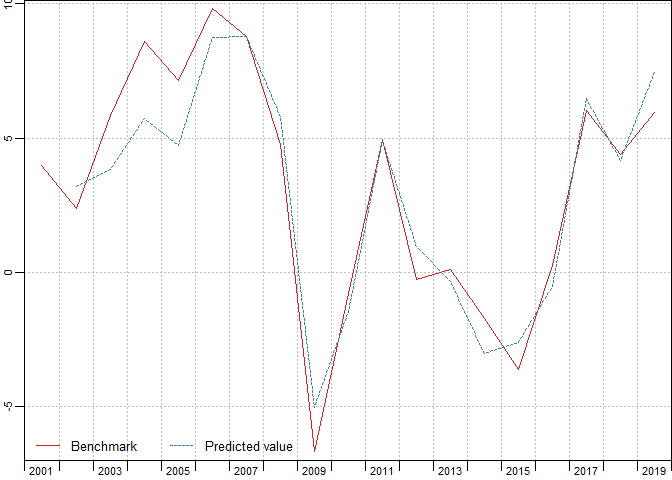
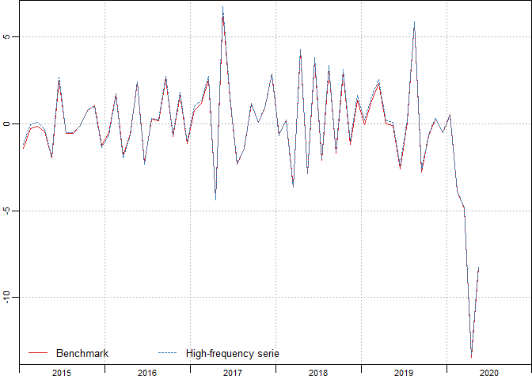
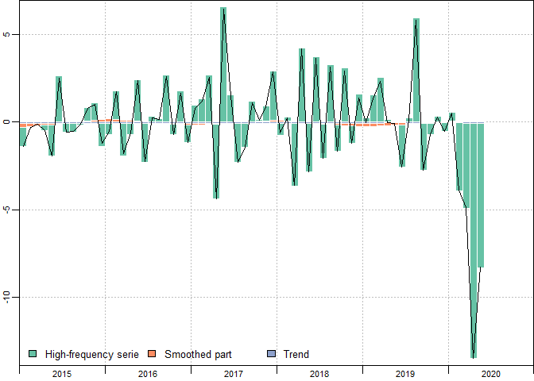
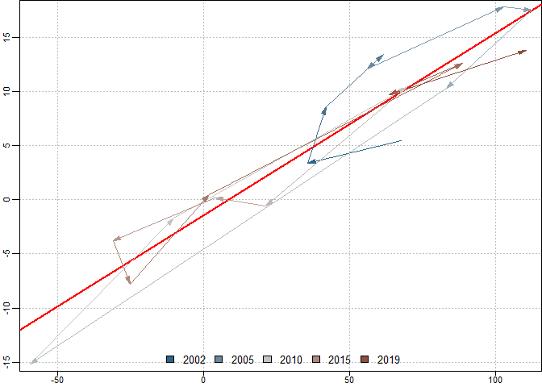
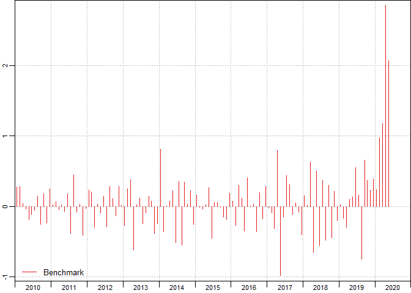
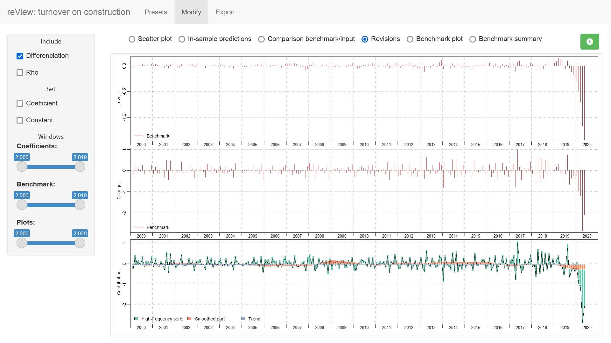

Overview
The R package disaggR is an implementation of the French Quarterly National Accounts method for temporal disaggregation of time series. twoStepsBenchmark() and threeRuleSmooth() bend a time series with another one of a lower frequency.
Installation
You can install the stable version from CRAN.
install.packages("disaggR")You can install the development version from Github.
# install.packages("devtools")
install_github("InseeFr/disaggR")Usage
library(disaggR)
benchmark <- twoStepsBenchmark(hfserie = turnover,
lfserie = construction,
include.differenciation = TRUE)
as.ts(benchmark)
coef(benchmark)
summary(benchmark)
plot(benchmark)
plot(in_sample(benchmark))
plot(in_disaggr(benchmark,type="changes"),
start=c(2015,1),end=c(2020,12))
plot(in_disaggr(benchmark,type="contributions"),
start=c(2015,1),end=c(2020,12))
plot(in_scatter(benchmark))
new_benchmark <- twoStepsBenchmark(hfserie = turnover,
lfserie = construction,
include.differenciation = FALSE)
plot(in_revisions(new_benchmark,
benchmark),start = c(2010,1))
Shiny app
You can also use the shiny application reView, to easily chose the best parameters for your benchmark.
reView(benchmark)